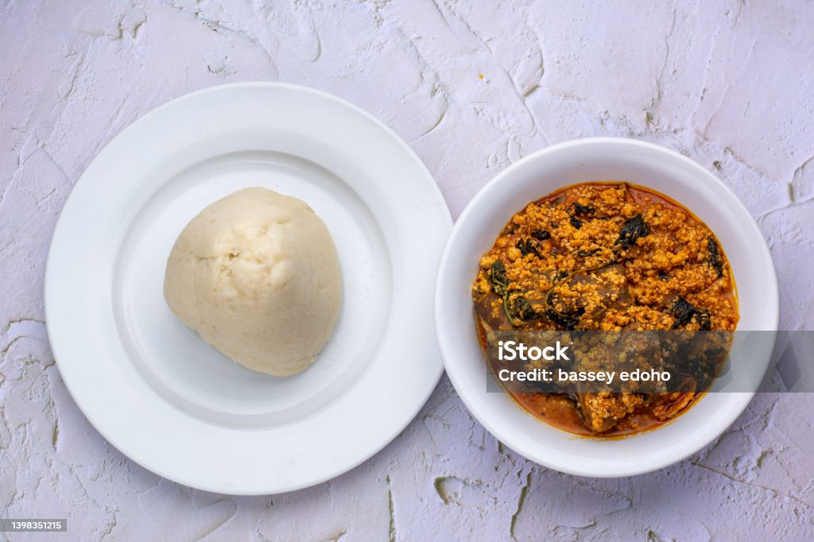

Odin Recipes

SEMO DISH
Semo is a popular dish among the Nigerians in West Africa.
Ingredients
- water
- semo flour
- cooking oil
Steps
- On the cooking gas
- Place the cooking pot on fire
- Let the water boil to a very hot degree
- Add a little bit of cooking oil
- Pour the semo flour little by little
- Mix with the turning spoon till it's solid
- Turn it aggressively for a few rounds
- There you have your Semo Dish
Home